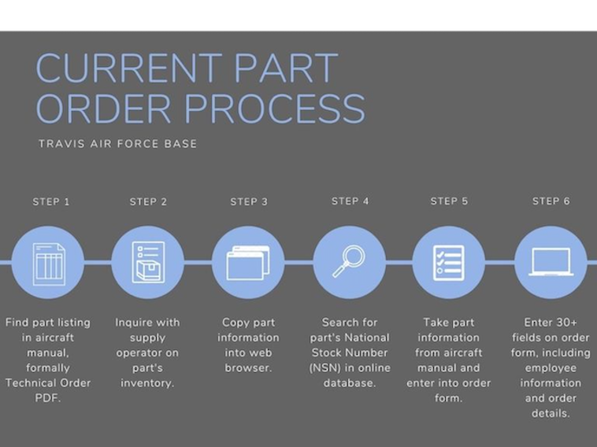

In Summer 2020, I had the opportunity to develop a program to streamline aircraft maintenance, working alongside Bernard Chan
and esteemed program leads, TSgt. Evan Strahan and SSgt. Max Estrada at Travis Air Force Base.
Problem Statement
Presently, the first steps of the maintenance process at Travis Air Force Base begin with identifying the malfunctioning part
on the flight line, and subsequently putting in an order for that part. The current method of ordering a part uses a multitude of platforms and requires inquiry requests
to different departments before a formal supply order can be submitted. This process can be unwieldy and there is room for improvement to make it more efficient.
The goal with this project is to automate this complicated process to make it faster and easier for maintenance professionals to order new parts.
For a detailed demonstration of the current part ordering process, view our problem statement video.
Research
To better understand the necessary components of the part ordering process, and what mechanisms can be made more efficient,
my partner and I delved into the steps a maintenance operator follows to order a part. After conducting research in the first stage of our project, we found
that it could take anywhere from 30 minutes to an hour to order a single part, from start to finish.
By studying aircraft manuals, or more formally, Technical Orders, understanding the use of National Stock Numbers, recreating
a mock warehouse inventory, and finally dissecting the F9006 part order form, our research gave us a solid foundation for our project.

Mockup
Early on in the project, I felt it was important to create a low fidelity mockup to share with our program leads to ensure my partner and I were building features that targeted key aspects of the part order process.
After creating the mockup and better understanding what features were most useful to maintenance operators, my partner and I prioritized creating clickable part numbers and reducing the number of field entries down to two.
Methodology
By analyzing friction points in the current system, I was able to better define a product strategy.
In order to maximize efficiency, we targeted three segments that would greatly reduce time spent and actions needed to submit an order— Technical Orders, National Stock Numbers, and supply inquiries.
Thus, our program utilizes three core, intuitive algorithms that we developed during the second stage of our project.
Technical Order Parsing
To automate the process of extracting part information from the Technical Order, we created
a parsing algorithm to reproduce the manual into an interactive format. The program first divides the table into rectangular areas where the text can be
extracted by a Java library, PDFBox. The algorithm then separates the table into rows by
measuring the Y-coordinates of the entries in the first column. Next, the algorithm divides each row into columns by reading the
standardized column widths. This allows it to create smaller rectangles to
organize the text we extract. This process repeats for every column and every row, creating
and reading each rectangle of the table until the end of the page.
National Stock Number Web Scrape
To minimize the need for the maintenance operator to open a web browser and copy the part number information to find the National Stock Number (NSN),
the second core algorithm web scrapes for NSNs. We used NSNCenter.com to match part numbers to national stock numbers,
but because the site did not have an API, we used JSoup to web-scrape information
from the HTML code of the webpage. The program collects all the possible
corresponding NSNs for the specific part number chosen with their corresponding
descriptions and cages. This algorithm allows us to display the collected information to the
maintenance operator. While the program would ideally automatically pair a part to its NSN based on description and cage,
we found relatively common issues like synonymous part descriptions and repeated cage
numbers during our research. We decided to have the maintenance operator manually choose the
corresponding NSN to avoid imprecisions.
Supply Inventory Inquiry
Lastly, the most time consuming portion of the part ordering process requires the maintenance operator to
contact a supply operator to confirm whether the part is in stock or if it needs to be ordered. To completely automate this step,
the third backend process references a CSV supply database to check a part’s inventory. The program scans through the database to find a part by its
National Stock Number and its serve balance, or quantity in stock. This information is displayed in our program’s checkout
window to circumvent the need to contact a supply operator to check a part’s inventory.
For our project prototype, we are utilizing a mock warehouse to mirror the current database at Travis AFB.
For a detailed look into the core algorithms of our project, view our program methodology video.
Final Prototype
For our final prototype, we developed a Java desktop application to
automate the process of ordering parts, using JavaFX and SceneBuilder to construct the
user interface. This constituted our project's third stage, which also included generating documentation for Travis Air Force Base to takeover the project.
Our program improves part ordering efficiency by 66% by reducing the total number of steps required, as well as time spent on filling out the order form and inquiring with a supply operator.
Looking Forward
By the third stage of our projects, my partner and I met our objective to deliver a proof-of-concept protoype. However, I acknowledge our program has room for improvement to make the part ordering process even more efficient for Travis Air Force Base.
Some of the features to improve the program include:
1. Retrofitting the user experience by refining appearance.
2. Including hover capabilities to display supply inventory.
3. Accommodating multiple Technical Order pages, rather than just one table.
Acknowledgements
Thank you to the National Security Innovation Network and Dana Sanford for hosting this valuable, first-hand learning experience, and Kaitie Penry, my NSIN Point of Contact, for guiding me through the entire process. I would also like to thank the U.S. Department of Defense for supporting programs like the X-Force Fellowship that allow university students to get involved in national security. I appreciate the opportunity to work with Travis Air Force Base and Phoenix Spark Accelerator and the resources they provided for my partner and I to develop an impactful solution to a challenging problem. Finally, thank you to TSgt. Evan Strahan and SSgt. Max Estrada for working with our team every step of the way through brainstorming, prototyping, and ultimately building an effective end product designed specifically for airmen.